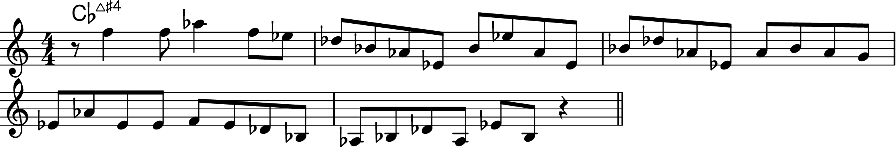
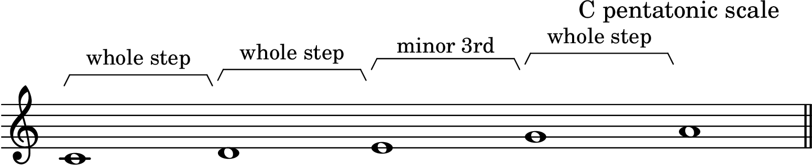
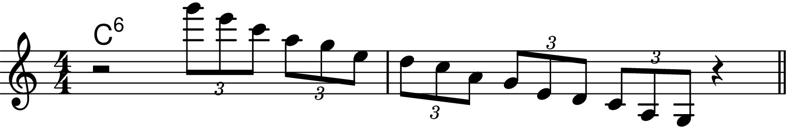
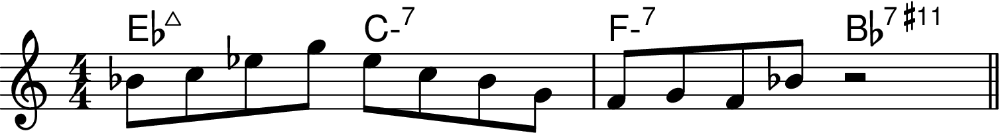

Chapter 9: Pentatonic Scales
Back to Top
The Pentatonic Scale
Figure 9-1

Figure 9-2

Figure 9-3

Figure 9-4

The Modes and the Minor Pentatonic Scale
The I, IV and V Pentatonic Sclaes on II-V-I Chords
Playing Pentatonic Scales on "Giant Steps"
Pentatonic Scales and "Avoid" Notes
Playing the Same Pentatonic Scale on Successive Chords in Different Keys
The II Pentatonic Scale over Major 7th Chords
The IV Pentatonic Scale over Melodic Minor Chords
The In-sen and Other Five-Note Scales
The Minor Pentatonic and the Blues Scale
Practicing Pentatonic Scales